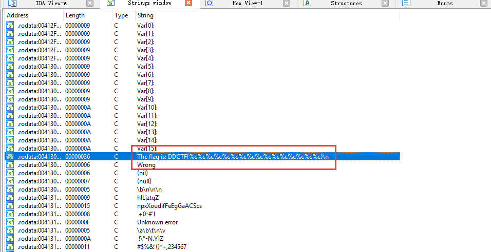
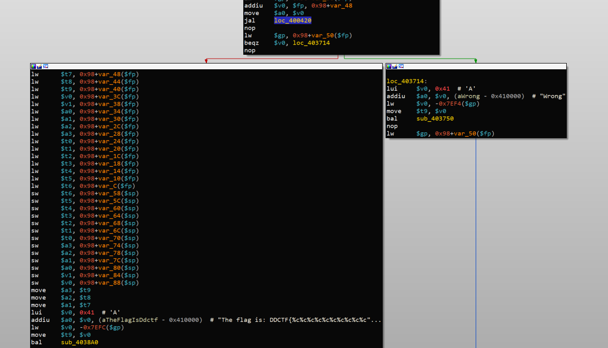

0x00 背景
最近一直在研究IoT设备的安全，而在IoT设备上程序很多都是MIPS架构的。所以对MIPS指令有一定研究，而在DDCTF 2018中刚好有一道逆向题目是MIPS程序，于是尝试做了一下。
0x01 环境搭建
由于我们通常的操作系统指令集都是x86的，所以无法跑MIPS程序。这时候就需要装QEMU来模拟，QEMU通过源码编译较为复杂，我们又没有特殊的需求，所以直接使用ubuntu的APT进行安装即可。
|
由于MIPS架构有两种——大端MIPS和小端MIPS。所以，我们需要确定这个程序是大端MIPS还是小端MIPS。
|
ELF 32-bit LSB很明显，这个程序是32位小端的MIPS。所以，我们使用qemu-mipsel baby_mips来运行这个程序。因为我们需要远程调试MIPS程序，所以要加上-g 端口参数，qemu-mipsel -g 1234 baby_mips，此时用IDA pro就可以通过Remote GDB Server来调试这个MIPS程序。
0x02 题目分析
直接打开IDA来载入程序，搜索字符串，可以看到

查找这个字符串的交叉引用，直接到sub_403238。

可以看到一个简单的